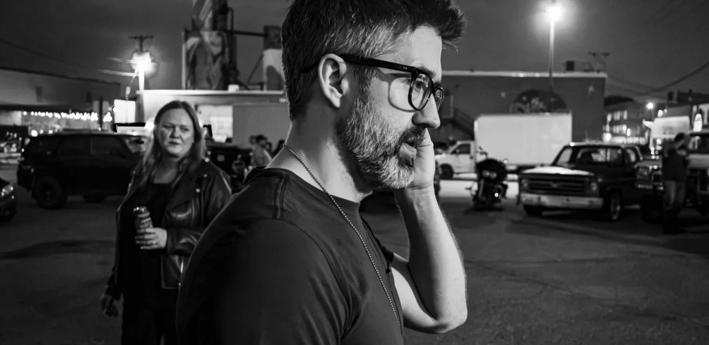
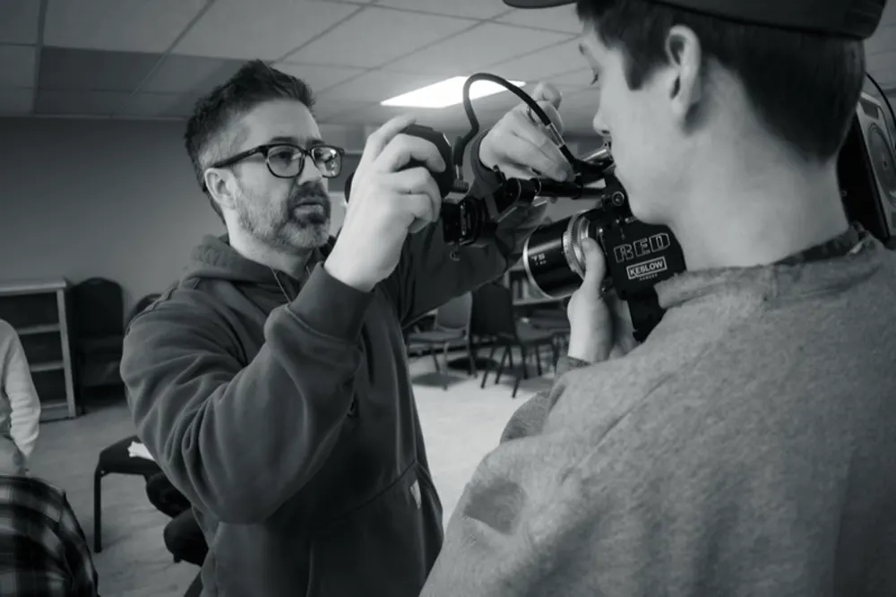

Derek “Dare” Olson
He covered crime and politics as a reporter and studied at the Poynter Institute before he picked up a camera.
He spent a decade in Los Angeles as a stage manager at Smashbox Studios and production supervisor at Disney's Maker Studios, and he shot extreme sports at the Sochi Winter Olympics.
He earned a full-stack web development certificate from UCLA Extension in 2017. He works in JavaScript, TypeScript, React, Next.js, Node, Python, and Postgres, and he built and runs The Rate Guide, a day-rate platform for freelance film crews. See his builds.
He runs Grain and Thunder now, out of North Dakota.
In the press
Minot State University NewsOctober 21, 2026 MSU connections help bring local talent together for television pilot How MSU staff, faculty, alumni, and former students came together to make The B.O.G., a television pilot shot in Minot. Read the article Minot Daily NewsSeptember 4, 2026 Minot native brings stories to screen A profile of the path from print journalism to Los Angeles production and back to Minot to start Grain and Thunder. Read the article
Clients
Pepsi, Beyond Meat, DC Shoes, Wolfgang Puck, Canon, JCPenney, Disney Channel, Disney+
Recognition
- 2026Bronze, 47th Annual Telly AwardsMillennial Taekwondo Tortoises, animated comedy pilot
- 2023Jerome Independent Film FestivalAnimated TV pilot, evaluated for development by FOX Animation
- 2017Las Vegas Film FestivalThe Rideshare
- 2014Sochi Winter OlympicsPhoto services, extreme sports coverage, 1B+ daily impressions
- 2013American Pavilion, Cannes Film FestivalMerry Christmas Farmer
- 2008Los Angeles Press ClubHonorable mention, Entertainment Feature, Southern California Journalism Awards. “Chicken Babies, Bondage Nights and Severed Monkey Heads,” OC Weekly
- 2007Nevada Press Association Better Newspaper ContestFirst place, Best Feature Story, and second place, Best Spot News Story, in Class III (weekly newspapers with circulation of 6,000 to 19,999), for the Henderson Home News, a former Las Vegas Sun publication
- 2007Nevada Legislature, 74th SessionAccredited press representative for the Henderson Home News, listed in the Assembly Journal on opening day, February 5, 2007
Board service
- CurrentMidwest Broadcast Journalists AssociationBoard of directors, North Dakota representative